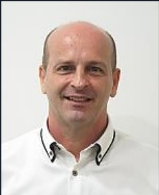
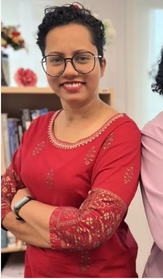

Staff Profiles (2022-2023)
|  |
- Mr. Richard Tolosi
- Assessment Coordinator & Lecturer
- Subject: Intensive English (IEP)
The Intensive English Programme (IEP) is a full-time course that equips students with the English Language skills necessary to undertake college or university-level programmes taught in English. Once you achieve the required proficiency level, you will be ready for one of Sunway's many academic programmes.The programme covers both oral and written components with an emphasis on English for Academic Purposes. A systematic build-up of teaching and learning strategies enable learners to develop a sound foundation in English.
|
 |
- Dr. Sim Tze Ying
- Head/School of American Education
- Subject: University Life - Freshman (UNIL 1011)
- Subject: Community service (MU4 2162)
Assoc. Prof. Dr. Sim Tze Ying currently heads the Centre for American Education of Sunway University. Dr Sim holds a Doctorate of Engineering Degree (Magna Cum Laude) from the University of Kassel, Germany, where she was also a researcher and teaching assistant for seven years. Subjects covered by her during her time in Germany included Embedded System, Automotive Programming, and Software Tools for Engineering. She acquired her Master of Science degree from Universiti Putra Malaysia, specialising in Software Engineering, and has worked in Motorola Semiconductor Malaysia for about five years as a System Engineer. Her research areas include variability modelling and engineering education. She enjoys teaching and continues to experiment with different technologies as well as methods that would enhance the teaching and learning engagement. Making education available for all is one of her interests.
|
 |
- Sumitra Ravindran Naidu
- Teaching Fellow
Centre for English Language Studies (CELS)
- Subject: Fundamentals of College Writing (ENGL1014)
Sumitra Ravindran Naidu has had 10+ of teaching experience teaching English as a First and Second Language. She has also had experience training tertiary students, educators and business professionals in personal development, academic literacy and business English. Currently, Sumitra teaches English for Specific Academic Purposes and Communication Skills in various Diploma and Degree programmes.
|
 |
- Teoh Cheng Lee Mabel
- Senior Teaching Fellow (Centre for American Education)
- Subject: Introduction to Human Communication (COMM 1023)
Mabel holds a Masters in Art, majoring in International Communication, from Macquarie University, Australia and a Bachelor of Arts in Mass Communication and Multimedia, majoring in Journalism and Film & TV Studies, from Curtin University of Technology, Australia. With corporate work experiences in publishing, she has lived in Singapore, France and Switzerland before returning to Malaysia where she worked in the government sector, specializing in communications, digital content and public relations. She has been teaching communication subjects for over five years, specializing in public relations, cultural studies, human communication and journalism.
|
|  |
|
 |
|
 |
- Sujitra Sockanathan
- Senior Teaching Fellow
- Subject: Public Speaking and Presentation Skills (COMM 1013)
Sujitra Sockanathan is a dedicated, resourceful and goal-driven professional educator who emphasises the social and academic growth and development of students. She commits herself to creating a classroom atmosphere that is stimulating and encouraging to students. Prior to teaching, she has worked with several companies, gaining relevant working experience that she shares in her classroom. Her corporate networking has also aided her in organising workshops and trainings from these companies for her students. She joined the Centre of American Education, Sunway University in 2013 but she is no stranger to the American Degree Transfer Program as she has been teaching communication-related subjects elsewhere since 2006. Her primary research interests are on transcultural and multicultural communication. In 2017, she collaborated with Berjaya University College Kuala Lumpur, Malaysia on a project entitled Ritual Practices in the transcultural Chitty Community.
|
 |
- Tan Tee Hean
- Lecturer (Centre for American Education)
- Subject: Web Design & Development (COMM 3013)
Tan Tee Hean holds a Master in Business Administration, majoring in information technology, from Multimedia University, Malaysia and a Bachelor of Science (Magna Cum Laude) in Information Systems from Campbell University, USA. She is an Oracle-certified Java instructor and Java Developer. She was also the Java and Android trainer for the Malaysia Digital Economy Corporation’s (MDEC) Trained-The-Trainer programme and Job-Camp programme. With more than 15 years in training and lecturing, she is still very passionate in teaching and exploring new technology with the belief that software development drives technology. She currently teaches information technology at the Centre of American Education, Sunway University. She is interested in software and mobile development as well as natural language processing.
|